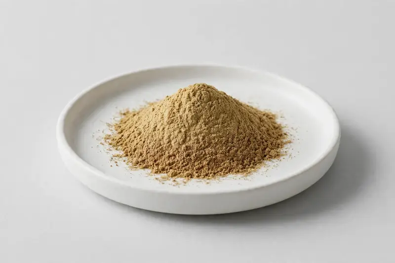

Tribulus terrestris — fruit and aerial-part extract standardized to saponins, positioned around sports and vitality formulations.

Overview
Tribulus is a well-established botanical in sports nutrition and men's vitality categories. Extract is standardized to saponins, with 40-90% commonly requested, and protodioscin levels also specified by some buyers. We source through vetted partner producers and confirm each buyer's marker, ratio and carrier requirements before quotation.
Specifications below reflect commonly requested options in the market — not a stock list. Share your target spec and we'll confirm exactly what we can supply, honestly.
| Specification | Details |
|---|---|
| Botanical identity | Tribulus terrestris, fruit / aerial parts |
| Marker compound | Saponins / protodioscin — commonly requested: 40-90% saponins (UV) |
| Appearance | Light yellow-brown to brown fine powder |
| Analytical methods | Methods referenced in buyer specifications: HPLC, UV |
| Mesh size | Typically 80–100 mesh (confirm per inquiry) |
| Testing | COA/TDS arranged on request; scope agreed per your spec |
Applications
Documentation
We don't claim in-house labs or certifications we don't hold. COA and TDS documents can be arranged on request, and testing scope is agreed against your specification before supply.
FAQ
Related products
Zingiber officinale
Key marker: Gingerols
View specs →Piper nigrum
Key marker: Piperine
View specs →Boswellia serrata
Key marker: Boswellic Acids / AKBA
View specs →Crataegus pinnatifida
Key marker: Vitexin
View specs →Vaccinium myrtillus
Key marker: Anthocyanins
View specs →Buyer guides
Buyer’s guide
Identity, actives, heavy metals, micro — what each section of a Certificate of Analysis means, and the red flags that tell you to walk away.
Read the guide →Buyer’s guide
Section-by-section COA walkthrough — marker assays, heavy metals, micro panels, red flags, and a buyer checklist.
Read the guide →Send your target spec and volumes — we'll respond with a tailored quotation.
Request a Quote